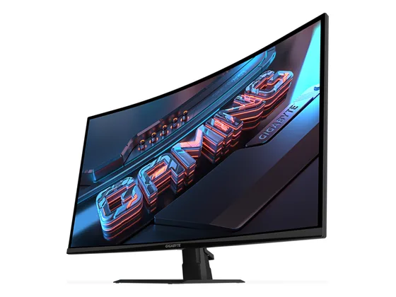
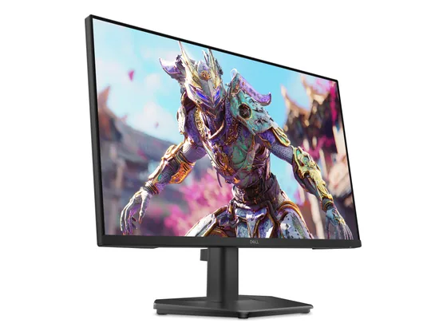
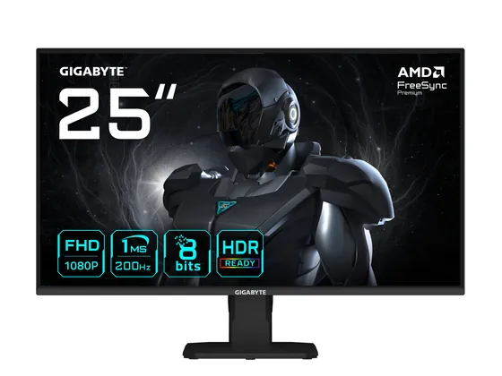

Gigabyte GS32QCA : avis, tests et prix
Le verdict en une phrase. Un 32 pouces QHD incurvé à 180 Hz pour moins de 200 € : beaucoup de surface et d'immersion pour le prix.
N° 10 sur 10 dans le top 10 Écrans PC petit prix.

Pour qui ?
Vous voulez un grand écran immersif pour jouer et regarder des vidéos sans gros budget.
Vous lisez beaucoup de texte de près : le QHD sur 32" est moins fin.
Le consensus de la presse
Le test recensé ne donne pas de note chiffrée : nous renvoyons vers l'article plutôt que d'inventer une note.
Où l'acheter
La configuration peut différer d'un marchand à l'autre : vérifiez la fiche avant d'acheter. Seuls les liens Amazon sont affiliés à ce jour ; les autres sont de simples liens directs. Aucun n'influence les notes ni le classement.
Tous les tests recensés
Chaque ligne renvoie vers le test d'origine. Les notes sont converties sur 10 ; « test » signale un article sans note chiffrée. Notre méthode.
- Noticias3Dtest
Les alternatives pour le même usage
Tout le top 10 →
Dell SE2426HGUn 24 pouces 240 Hz signé Dell, avec garantie constructeur solide, pour moins de 100 € : simple et efficace. N° 9 · Le moins cher
Gigabyte GS25F2Un 25 pouces Full HD à 200 Hz pour moins de 100 € : la fluidité d'un écran gaming au prix d'un écran de bureau.Questions fréquentes
Que pense la presse de l'écran Gigabyte GS32QCA ?
1 test presse recensé, sans note chiffrée. Un 32 pouces QHD incurvé à 180 Hz pour moins de 200 € : beaucoup de surface et d'immersion pour le prix.
Quels sont les points faibles relevés par les tests ?
Densité de pixels plus faible qu'un 27" ; Testé sans note chiffrée.
À qui s'adresse le modèle Gigabyte GS32QCA ?
Vous voulez un grand écran immersif pour jouer et regarder des vidéos sans gros budget. À éviter si : vous lisez beaucoup de texte de près : le QHD sur 32" est moins fin.
Où l'acheter, et à quel prix ?
Comptez environ 180 € (prix indicatif constaté en octobre 2026). Nous l'avons trouvé en vente chez Amazon. Les prix changent vite et la configuration peut différer d'un marchand à l'autre : seul le prix affiché par le marchand fait foi.